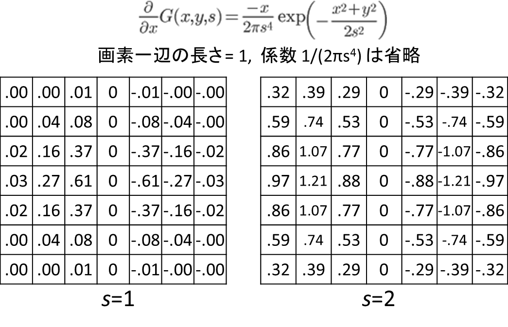

ガウス関数(1次元, 2次元, 3次元)の微分
戻る topへ
要旨
よく使うので、ガウス関数の1階、2階微分をまとめておく
1次元
ガウス関数
 = \frac{1}{\sqrt{2 \pi}s}\exp\left( -\frac{x^2}{2s^2} \right))
1階微分
 = \frac{-x}{\sqrt{2 \pi}s^3}\exp\left( -\frac{x^2}{2s^2} \right))
2階微分
 = \frac{1}{\sqrt{2 \pi}s^5}(x^2 - s^2)\exp\left( -\frac{x^2}{2s^2} \right))
2次元
ガウス関数
 = \frac{1}{2 \pi s^2}\exp\left( -\frac{x^2%2By^2}{2s^2} \right))
1階微分
 = \frac{- x}{ 2 \pi s^4}\exp\left( -\frac{x^2%2By^2}{2s^2} \right))
2階微分
 = \frac{1}{2 \pi s^6}(x^2 - s^2) \exp\left( -\frac{x^2%2By^2}{2s^2} \right))
 = \frac{1}{2 \pi s^6}xy\exp\left( -\frac{x^2%2By^2}{2s^2} \right))
ヘッシアン
 = \frac{1}{2\pi s^6} \exp\left( -\frac{x^2%2By^2}{2s^2} \right)\left{ x^2-s^2 \;\;\;\;\;\;\; xy \\ xy \;\;\;\;\;\;\;\; y^2-s^2 \right})
以下、2次元ガウス関数の一階微分のs=1, s=2の場合のプロット。

スケールスペースの考え方では、画像I(x,y)の微分は、
▽ I(x, y) = I(x,y) * ▽G(x,y,s) という感じに、画像とgaussianカーネルのコンボリューションで表される．
確かに、上のGaussianカーネルのx方向の微分は、よく見るソーベルフィルタ(x方向と)よく似ている．
実際に, s = 0.05, pixel pitch = 0.05くらいに取ると、ソーベルフィルタ{{10-1}{20-2}{10-1}}になる.
3次元
ガウス関数
 = \frac{1}{\sqrt{2 \pi}^3 s^3}\exp\left( -\frac{x^2%2By^2%2Bz^2}{2s^2} \right))
1階微分
 = \frac{-x}{\sqrt{2 \pi}^3 s^5} \exp\left( -\frac{x^2%2By^2%2Bz^2}{2s^2} \right))
2階微分
 = \frac{(x^2-s^2)}{\sqrt{2 \pi}^3 s^7} \exp\left( -\frac{x^2%2By^2%2Bz^2}{2s^2} \right))
 = \frac{xy}{\sqrt{2 \pi}^3 s^7} \exp\left( -\frac{x^2%2By^2%2Bz^2}{2s^2} \right))
ヘッシアン
 = \frac{1}{\sqrt{2 \pi}^3 s^7} \exp \left(-\frac{x^2%2By^2%2Bz^2}{2s^2} \right))

一階微分は、ソーベルフィルタ等よく必要になるが、ヘッシアンも結構重要らしい．
3次元で各ボクセルのヘッシアンを作成して、その固有値分解をすると、その周囲が血管などの円筒状なのか膜状なのかが分かるよ、と言う論文がたくさん出ている。